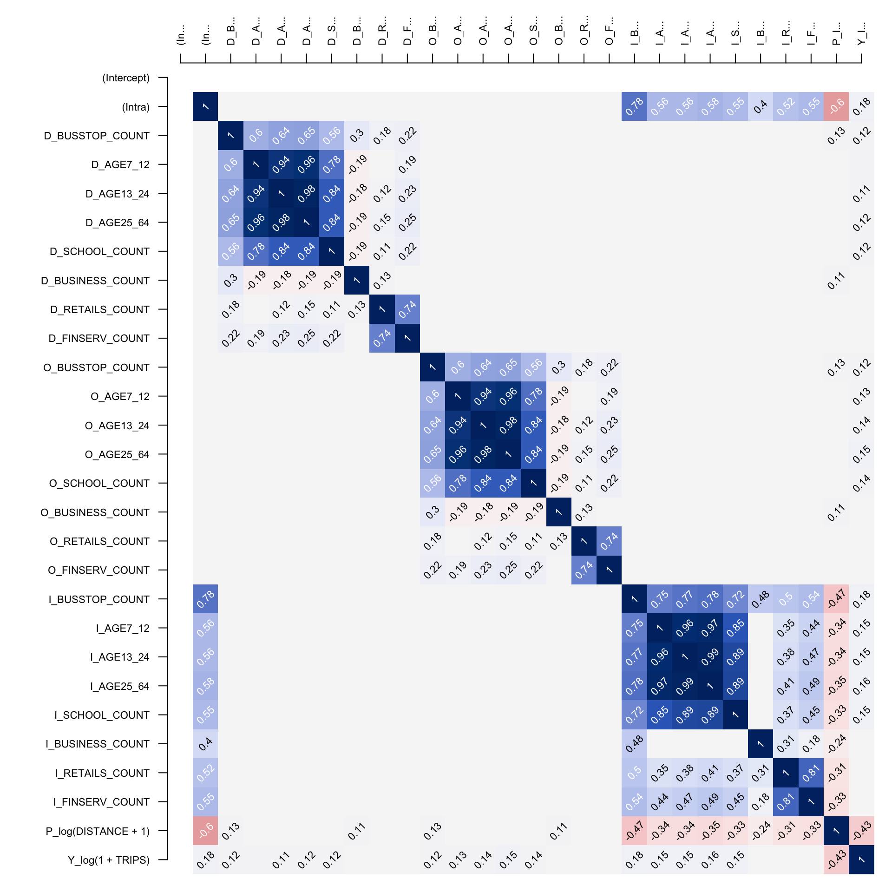
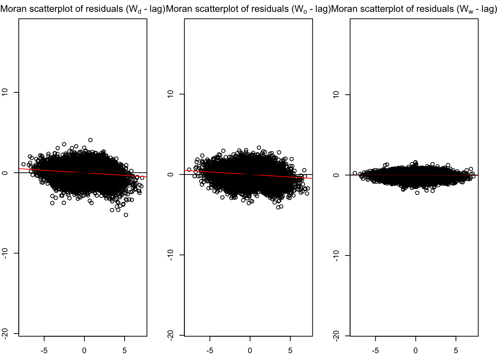
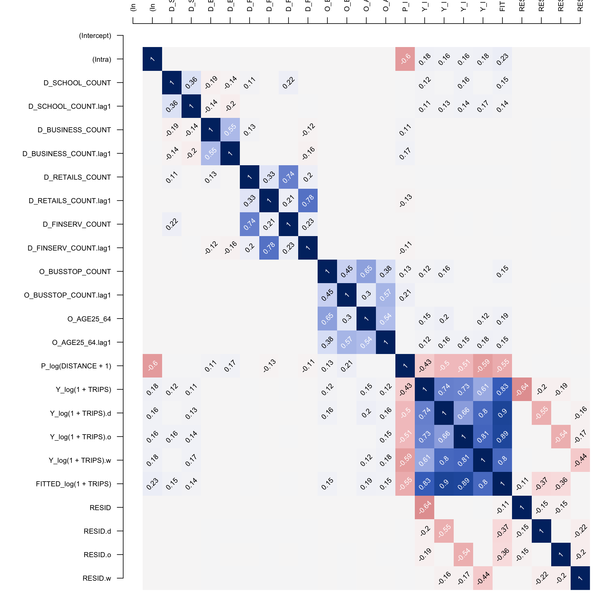

Code
devtools::install_github("LukeCe/spflow")Spatial Econometric Interaction Models.
Install development version of spflow package from github.
devtools::install_github("LukeCe/spflow")Load needed packages.
pacman::p_load(sf, sp, tmap, spdep, tidyverse, spflow, Matrix, knitr)a spatial weight.
a tibble data.frame of orig, dest, flows and distance
a tibble data.frame of explanatory variables.
Import subzone layer.
mpsz = st_read(dsn = "./data/geospatial",
layer = "MPSZ-2019") %>% st_transform(crs = 3414) Reading layer `MPSZ-2019' from data source
`/Users/SMU/liangyao2023/ISSS624/Inclass_Ex/Inclass_Ex05/data/geospatial'
using driver `ESRI Shapefile'
Simple feature collection with 332 features and 6 fields
Geometry type: MULTIPOLYGON
Dimension: XY
Bounding box: xmin: 103.6057 ymin: 1.158699 xmax: 104.0885 ymax: 1.470775
Geodetic CRS: WGS 84busstop = st_read(dsn = "./data/geospatial",
layer = "BusStop") %>% st_transform(crs = 3414) Reading layer `BusStop' from data source
`/Users/SMU/liangyao2023/ISSS624/Inclass_Ex/Inclass_Ex05/data/geospatial'
using driver `ESRI Shapefile'
Simple feature collection with 5159 features and 3 fields
Geometry type: POINT
Dimension: XY
Bounding box: xmin: 3970.122 ymin: 26482.1 xmax: 48280.78 ymax: 52983.82
Projected CRS: SVY21Preparing spatial weights.
centroids <- suppressWarnings({st_point_on_surface(st_geometry(mpsz_busstop))})
mpsz_nb <- list(
"by_contiguity" = poly2nb(mpsz_busstop),
"by_distance" = dnearneigh(centroids, d1=0, d2=5000),
"by_knn" = knn2nb(knearneigh(centroids, 3)))
mpsz_nbmpsz_nb <- read_rds("./data/rds/mpsz_nb.rds")
mpsz_flow <- read_rds("./data/rds/mpsz_flow.rds") Importing passenger trips data.
od_data <- read_rds('./data/rds/od_data.rds')
odbus6_9 <- read_rds('./data/rds/odbus6_9.rds')Importing explanatory variables data. Use length of st_intersects with sub_zone as count.
mpsz_var <- read_rds('./data/rds/mpsz_var.rds')Creating ‘spflow_network-class’ objects
mpsz_net <- spflow_network(
id_net = "sg",
node_neighborhood = nb2mat(mpsz_nb$by_contiguity),
node_data = mpsz_var,
node_key_column = "SZ_CODE")
mpsz_netSpatial network nodes with id: sg
--------------------------------------------------
Number of nodes: 313
Average number of links per node: 6.077
Density of the neighborhood matrix: 1.94% (non-zero connections)
Data on nodes:
SZ_NAME SZ_CODE BUSSTOP_COUNT AGE7_12 AGE13_24 AGE25_64
1 INSTITUTION HILL RVSZ05 2 330 360 2260
2 ROBERTSON QUAY SRSZ01 10 320 350 2200
3 FORT CANNING MUSZ02 6 0 10 30
4 MARINA EAST (MP) MPSZ05 2 0 0 0
5 SENTOSA SISZ01 1 200 260 1440
6 CITY TERMINALS BMSZ17 10 0 0 0
--- --- --- --- --- --- ---
308 NEE SOON YSSZ07 12 90 140 590
309 UPPER THOMSON BSSZ01 47 1590 3660 15980
310 SHANGRI-LA AMSZ05 12 810 1920 9650
311 TOWNSVILLE AMSZ04 9 980 2000 11320
312 MARYMOUNT BSSZ02 25 1610 4060 16860
313 TUAS VIEW EXTENSION TSSZ06 11 0 0 0
SCHOOL_COUNT BUSINESS_COUNT RETAILS_COUNT FINSERV_COUNT ENTERTN_COUNT
1 1 6 26 3 0
2 0 4 207 18 6
3 0 7 17 0 3
4 0 0 0 0 0
5 0 1 84 29 2
6 0 11 14 4 0
--- --- --- --- --- ---
308 0 0 7 0 0
309 3 21 305 30 0
310 3 0 53 9 0
311 1 0 83 11 0
312 3 19 135 8 0
313 0 53 3 1 0
FB_COUNT LR_COUNT COORD_X COORD_Y
1 4 3 103.84 1.29
2 38 11 103.84 1.29
3 4 7 103.85 1.29
4 0 0 103.88 1.29
5 38 20 103.83 1.25
6 15 0 103.85 1.26
--- --- --- --- ---
308 0 0 103.81 1.4
309 5 11 103.83 1.36
310 0 0 103.84 1.37
311 1 1 103.85 1.36
312 3 11 103.84 1.35
313 0 0 103.61 1.26Before we can choose to use contiguity or fix distance or knn as node_neighborhood, compare those three.
Convert to pairwise data.
mpsz_net_pair <- spflow_network_pair(
id_orig_net = "sg",
id_dest_net = "sg",
pair_data = mpsz_flow,
orig_key_column = "ORIGIN_SZ",
dest_key_column = "DESTIN_SZ")
mpsz_net_pairSpatial network pair with id: sg_sg
--------------------------------------------------
Origin network id: sg (with 313 nodes)
Destination network id: sg (with 313 nodes)
Number of pairs: 97969
Completeness of pairs: 100.00% (97969/97969)
Data on node-pairs:
DESTIN_SZ ORIGIN_SZ DISTANCE TRIPS
1 RVSZ05 RVSZ05 0 67
314 SRSZ01 RVSZ05 305.74 251
627 MUSZ02 RVSZ05 951.83 0
940 MPSZ05 RVSZ05 5254.07 0
1253 SISZ01 RVSZ05 4975 0
1566 BMSZ17 RVSZ05 3176.16 0
--- --- --- --- ---
96404 YSSZ07 TSSZ06 26972.97 0
96717 BSSZ01 TSSZ06 25582.48 0
97030 AMSZ05 TSSZ06 26714.79 0
97343 AMSZ04 TSSZ06 27572.74 0
97656 BSSZ02 TSSZ06 26681.7 0
97969 TSSZ06 TSSZ06 0 270Combine net and pairwise data.
mpsz_multi_net <- spflow_network_multi(mpsz_net, mpsz_net_pair)
mpsz_multi_netCollection of spatial network nodes and pairs
--------------------------------------------------
Contains 1 spatial network nodes
With id : sg
Contains 1 spatial network pairs
With id : sg_sg
Availability of origin-destination pair information:
ID_ORIG_NET ID_DEST_NET ID_NET_PAIR COMPLETENESS C_PAIRS C_ORIG C_DEST
sg sg sg_sg 100.00% 97969/97969 313/313 313/313Check multi-collinearity between explanatory variables using:
pair_cor() to build correlation matrix.
cor_image() to plot the correlation matrix as a correlogram.
cor_formula <- log(1+TRIPS) ~
BUSSTOP_COUNT +
AGE7_12 +
AGE13_24 +
AGE25_64 +
SCHOOL_COUNT +
BUSINESS_COUNT +
RETAILS_COUNT +
FINSERV_COUNT +
P_(log(DISTANCE + 1))
cor_mat <- pair_cor(mpsz_multi_net,
spflow_formula = cor_formula,
add_lags_x = FALSE)
colnames(cor_mat) <- paste0(substr(colnames(cor_mat),1,3),"...")
cor_image(cor_mat)
There are 3 estimate methods:
Maximum likelihood estimation (MLE)
Maximum likelihood estimation is the default estimation procedure. The matrix form estimation in the framework of this model was first developed by LeSage and Pace (2008) and then improved by Dargel (2021) .
Spatial two-stage least squares (S2SLS)
The S2SLS estimator is an adaptation of the one proposed by Kelejian and Prucha (1998) , to the case of origin-destination flows, with up to three neighborhood matrices Dargel (2021) . A similar estimation is done by Tamesue and Tsutsumi (2016) . The user can activate the S2SLS estimation via the estimation_control argument using the input spflow_control(estimation_method = "s2sls").
Bayesian Markov Chain Monte Carlo (MCMC)
The MCMC estimator is based on the ideas of LeSage and Pace (2009) and incorporates the improvements proposed in Dargel (2021) . The estimation is based on a tuned Metropolis-Hastings sampler for the auto-regressive parameters, and for the remaining parameters it uses Gibbs sampling. The routine uses 5500 iterations of the sampling procedure and considers the first 2500 as burn-in period. The user can activate the S2SLS estimation via the estimation_control argument using the input spflow_control(estimation_method = "mcmc").
base_model <- spflow(spflow_formula = log(1+TRIPS)~
O_(BUSSTOP_COUNT +
AGE25_64) +
D_(SCHOOL_COUNT +
BUSINESS_COUNT +
RETAILS_COUNT +
FINSERV_COUNT) +
P_(log(DISTANCE + 1)),
spflow_networks = mpsz_multi_net)
base_model--------------------------------------------------
Spatial interaction model estimated by: MLE
Spatial correlation structure: SDM (model_9)
Dependent variable: log(1 + TRIPS)
--------------------------------------------------
Coefficients:
est sd t.stat p.val
rho_d 0.680 0.004 192.554 0.000
rho_o 0.678 0.004 187.727 0.000
rho_w -0.396 0.006 -65.586 0.000
(Intercept) 0.410 0.065 6.265 0.000
(Intra) 1.313 0.081 16.264 0.000
D_SCHOOL_COUNT 0.017 0.002 7.885 0.000
D_SCHOOL_COUNT.lag1 0.002 0.004 0.551 0.582
D_BUSINESS_COUNT 0.000 0.000 3.015 0.003
D_BUSINESS_COUNT.lag1 0.000 0.000 -0.249 0.803
D_RETAILS_COUNT 0.000 0.000 -0.306 0.759
D_RETAILS_COUNT.lag1 0.000 0.000 0.152 0.879
D_FINSERV_COUNT 0.002 0.000 6.787 0.000
D_FINSERV_COUNT.lag1 -0.002 0.001 -3.767 0.000
O_BUSSTOP_COUNT 0.002 0.000 6.806 0.000
O_BUSSTOP_COUNT.lag1 -0.001 0.000 -2.364 0.018
O_AGE25_64 0.000 0.000 7.336 0.000
O_AGE25_64.lag1 0.000 0.000 -2.797 0.005
P_log(DISTANCE + 1) -0.050 0.007 -6.791 0.000
--------------------------------------------------
R2_corr: 0.6942932
Observations: 97969
Model coherence: Validatedestimation_control is by default using MLE following spflow_control(estimation_method = "mle"), can explicitly set using ‘estimation_control = spflow_control(estimation_method = "s2sls")’.
Using Moran scatter-plot of residuals.
old_par <- par(mfrow = c(1,3),
mar = c(2,2,2,2))
spflow_moran_plots(base_model)
inspect the relationship of the residual and the explanatory variables.
corr_residual <- pair_cor(base_model)
colnames(corr_residual) <- substr(colnames(corr_residual),1,3)
cor_image(corr_residual)
spflow_formula <- log(1+TRIPS)~
O_(BUSSTOP_COUNT +
AGE25_64) +
D_(SCHOOL_COUNT +
BUSINESS_COUNT +
RETAILS_COUNT +
FINSERV_COUNT) +
P_(log(DISTANCE + 1))
model_control <- spflow_control(estimation_method = "mle",
model = "model_1")
mle_model1 <- spflow(spflow_formula,
spflow_networks = mpsz_multi_net,
estimation_control = model_control)
mle_model1--------------------------------------------------
Spatial interaction model estimated by: OLS
Spatial correlation structure: SLX (model_1)
Dependent variable: log(1 + TRIPS)
--------------------------------------------------
Coefficients:
est sd t.stat p.val
(Intercept) 11.384 0.069 164.255 0.000
(Intra) -6.006 0.112 -53.393 0.000
D_SCHOOL_COUNT 0.093 0.003 28.599 0.000
D_SCHOOL_COUNT.lag1 0.255 0.006 44.905 0.000
D_BUSINESS_COUNT 0.001 0.000 10.036 0.000
D_BUSINESS_COUNT.lag1 0.003 0.000 18.274 0.000
D_RETAILS_COUNT 0.000 0.000 -1.940 0.052
D_RETAILS_COUNT.lag1 0.000 0.000 -2.581 0.010
D_FINSERV_COUNT 0.005 0.000 10.979 0.000
D_FINSERV_COUNT.lag1 -0.016 0.001 -17.134 0.000
O_BUSSTOP_COUNT 0.014 0.001 25.865 0.000
O_BUSSTOP_COUNT.lag1 0.015 0.001 21.728 0.000
O_AGE25_64 0.000 0.000 14.479 0.000
O_AGE25_64.lag1 0.000 0.000 14.452 0.000
P_log(DISTANCE + 1) -1.281 0.008 -165.327 0.000
--------------------------------------------------
R2_corr: 0.2831458
Observations: 97969
Model coherence: Validated“model_1” is the unconstrained model, r-squared is quite low indicating pool estimate.
use “model_8” to check the impact of intra-zonal trips.
spflow_formula <- log(1+TRIPS)~
O_(BUSSTOP_COUNT +
AGE25_64) +
D_(SCHOOL_COUNT +
BUSINESS_COUNT +
RETAILS_COUNT +
FINSERV_COUNT) +
P_(log(DISTANCE + 1))
model_control <- spflow_control(estimation_method = "mle",
model = "model_8")
mle_model8 <- spflow(spflow_formula,
spflow_networks = mpsz_multi_net,
estimation_control = model_control)
mle_model8--------------------------------------------------
Spatial interaction model estimated by: MLE
Spatial correlation structure: SDM (model_8)
Dependent variable: log(1 + TRIPS)
--------------------------------------------------
Coefficients:
est sd t.stat p.val
rho_d 0.689 0.003 196.831 0.000
rho_o 0.687 0.004 192.214 0.000
rho_w -0.473 0.003 -142.469 0.000
(Intercept) 1.086 0.049 22.275 0.000
(Intra) 0.840 0.075 11.255 0.000
D_SCHOOL_COUNT 0.019 0.002 8.896 0.000
D_SCHOOL_COUNT.lag1 0.019 0.004 5.130 0.000
D_BUSINESS_COUNT 0.000 0.000 3.328 0.001
D_BUSINESS_COUNT.lag1 0.000 0.000 1.664 0.096
D_RETAILS_COUNT 0.000 0.000 -0.414 0.679
D_RETAILS_COUNT.lag1 0.000 0.000 -0.171 0.864
D_FINSERV_COUNT 0.002 0.000 6.150 0.000
D_FINSERV_COUNT.lag1 -0.003 0.001 -4.601 0.000
O_BUSSTOP_COUNT 0.003 0.000 7.676 0.000
O_BUSSTOP_COUNT.lag1 0.000 0.000 0.552 0.581
O_AGE25_64 0.000 0.000 6.870 0.000
O_AGE25_64.lag1 0.000 0.000 -0.462 0.644
P_log(DISTANCE + 1) -0.125 0.005 -22.865 0.000
--------------------------------------------------
R2_corr: 0.6965973
Observations: 97969
Model coherence: Validated